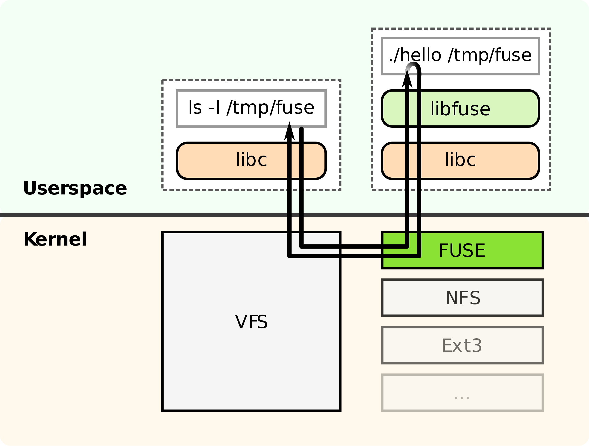
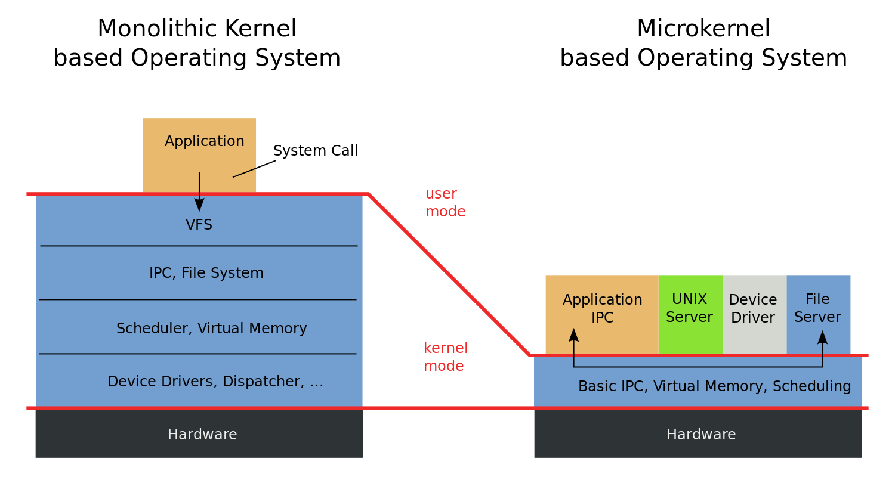
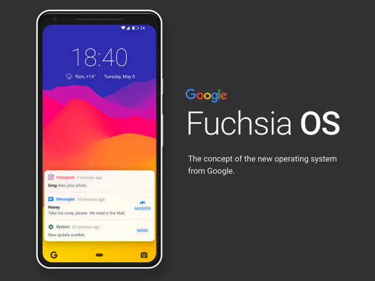
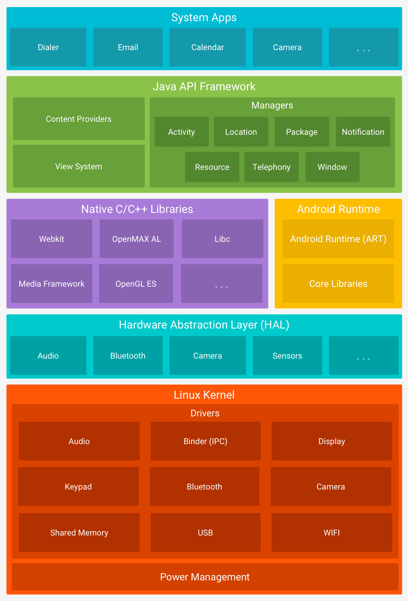

public: True class: center, middle # 微内核操作系统 蒋炎岩 <jyy@nju.edu.cn> 南京大学计算机软件研究所 --- # 本讲概述 > 操作系统是一组API和它行为的集合 > > * 我们学习了POSIX API (用Linux系统调用实现) > * 还有其他不同的操作系统设计吗？ * 微内核操作系统的设计 * 微内核操作系统的实现 --- class: center, middle # 微内核 --- # 实现一个操作系统 操作系统大到一定程度的时候，.red[bug几乎无法避免] * 内核代码拥有所有的权限 * UB可能导致程序行为异常、数据丢失、…… * 安全漏洞导致更严重的后果 ---- [Syzkaller](https://github.com/google/syzkaller): An unsupervised coverage-guided kernel fuzzer + KASAN (address sanitizer); ([slides](https://docs.google.com/presentation/d/1iAuTvzt_xvDzS2misXwlYko_VDvpvCmDevMOq2rXIcA/edit#slide=id.g18a0286605_0_34)) * 并发[use-after-free](http://patchwork.ozlabs.org/patch/1042902/) * 我们的工具一开张，就找到了btrfs和xfs的bugs --- # “最小化”操作系统内核 之前讲过FUSE，在用户空间实现文件系统 .center[] --- # “最小化”操作系统内核 操作系统中相当一部分功能可以作为进程实现 * 操作系统API实现为对服务器的remote procedure call ---- .red[进程是“虚拟机”] * (+) 更容易实现和移植到其他平台 * (+) 更容易保证正确性，例如压力测试/形式化验证，Trusted Computing Base (TCB) * (+) 应用的bug/漏洞不会引起系统崩溃 --- # 微内核 > A microkernel (often abbreviated as μ-kernel) is the near-minimum amount of software that can provide the mechanisms needed to implement an operating system (OS). These mechanisms include low-level address space management, thread management, and inter-process communication (IPC). .center[] --- # 机制和策略分离 微内核仅提供最少的.red[机制] * 完成必要的抽象 * 所有策略都交给用户态的程序运行 --- class: center, middle # 微内核：设计 --- # 微内核：系统调用 微内核的基础是.red[进程] (虚拟CPU) * 操作系统应该提供访问硬件的能力 (.red[系统调用]) * 但不能直接访问 (不能调用AM API/系统指令) * 进程之间需要通信 * send * receive --- # 进程间通信 (IPC) 同步的`send/receive(end_point, data)` (Minix2, original L4) * send时，对方非block在receive上，sender block * receive时，对方非block在send上，receiver block * (谁先到，谁等，不见不散） -- count: false ---- 同步进程通信的问题： * .blue[无法高效地实现select()]，必须为每一个文件描述符创建一个线程 --- # 进程间通信 (cont'd) 在IPC endpoint上提供同步机制 * `sem_trywait(end_point)` * `sem_wait(end_point)` * `sem_signal(end_point)` --- # 进程间通信 (cont'd) 避免长消息 * 进程：`send(file_server, SYS_WRITE, fd, buf, size);` * 需要把数据.red[复制]到另一个进程 (考虑写1GB的文件……) -- count: false ---- 解决方法 * 提供`grant`系统调用，把一个页面grant给另一个进程，直到另一个进程unmap后才能继续执行 * 提供`buf_alloc`系统调用，创建进程共享的缓冲区 --- # 用户态设备驱动 Linux Kernel中相当的漏洞/bugs都来自设备驱动程序 * 毕竟设备生产商写代码的人不是都靠得住 ---- 中断管理 * `upcall`线程向设备驱动发送消息/通知 * 通过系统调用访问设备寄存器(port I/O或memory-mapped I/O) * 驱动会首先向内核(通过系统调用)申请I/O的权限 * 如果驱动遇到bug，非法的I/O请求会被拒绝 (而不是直接执行) --- # .float-right[<img src="../static/wiki/os/2019/img/sel4.svg" width="200px"/>]例子：[seL4](https://ts.data61.csiro.au/publications/nicta_full_text/8988.pdf) 完全不一样的系统调用设计 * 问题：.green[如何在seL4上实现我们实现过的操作系统？] * 一个有趣的观察：.blue[AM和seL4的设计非常相似] ---- | 对象 | 描述 | | ------------------------------- | -------------------- | | TCB (Thread Control Block) | 线程控制 | | Cnode (Capability) | 权限管理 | | Endpoint (IPC端口) | 用于进程间通信 | | Notification (IPC通知) | 用于进程间通信 | | Page Table/Frame (连续内存区域) | 用于建立进程地址空间 | --- # 例子：[Exokernel](https://pdos.csail.mit.edu/6.828/2008/readings/engler95exokernel.pdf) > An exokernel should *avoid resource management*. 操作系统内核仅提供硬件资源的.red[虚拟化] * 对中断/异常进行抽象 → 物理内存、CPU、磁盘、TLB * 操作系统API实现为库函数 .center[<img src="../static/wiki/os/2019/img/exokernel.png" width="400px"/>] --- # Exokernel：例子 vCPU (Library OS)上的虚拟中断 * 内核中断处理程序创建用户态的中断上下文，跳转到中断处理程序(类似于信号) * 可以给其他vCPU发送中断(类似于信号) * 硬件中断只转发给注册监听事件的vCPU --- class: center, middle # 微内核：实现 --- # 优化消息拷贝 2次拷贝 * send → memcpy to kernel → receive → memcpy to user -- count: false ---- zero-copy * send → 把页面“交还”给内核 → receive → 重新映射页面 → Flush TLB --- # 一个有趣的细节 `time`命令 * 对于直接执行系统调用的单内核来说，得到user/sys的时间是非常容易的 * 微内核 * 文件系统操作是通过`rpc()`到文件系统服务进程实现的 * 如何实现`time()`？ --- class: center, middle # Fuchsia & Zircon --- # Google的野心 > Fuchsia is an “*investment by us in sort of modernizing and trying new concepts around operating systems*.” .center[] --- # 操作系统、应用与生态 为什么“国产操作系统”喊了那么多年，大家都觉得在骗钱？ * 为什么Google说Android就Android，说Fuchsia就Fuchsia？ * 为什么软件公司(BAT)这么成功？ ---- 在抽象层上构建应用程序是容易的 * MFC, Qt, ... * HTML + CSS + JavaScript: 浏览器、WebView 造抽象层.red[吃力不讨好] * 造个不一样的，谁来用；造个一样的，别人已经有了 * 对软件有超高的要求：质量、稳定性、安全…… --- # .float-right[] Android系统 * 底下就是个Linux * 可以安装终端模拟器、Python、…… * 构建了一套全新的Android App的运行环境 --- # Google的野心 Linux是个很大的包袱 * 保持更新 * 安全漏洞 * …… ---- 不能把Linux换掉么？ * 微软：我们有Windows Subsystem for Linux (实现Linux APIs) * Google：反正只要支持应用就行了 * 把系统栈里所有东西都换掉吧 * 已有的工具链对Linux (POSIX)依赖太大 --- # Zircon微内核 Handles and Objects * handle是指向操作系统中对象(Object)的指针 (类似文件描述符) Tasks (Threads, Processes, Jobs) * 都是Objects IPC (Channels, Sockets, Fifos, Ports, Events) * 各种进程间通信场景 Virtual Memory Object (VMO) * 读/写/克隆；能够在进程之间transfer (实现zero-copy)